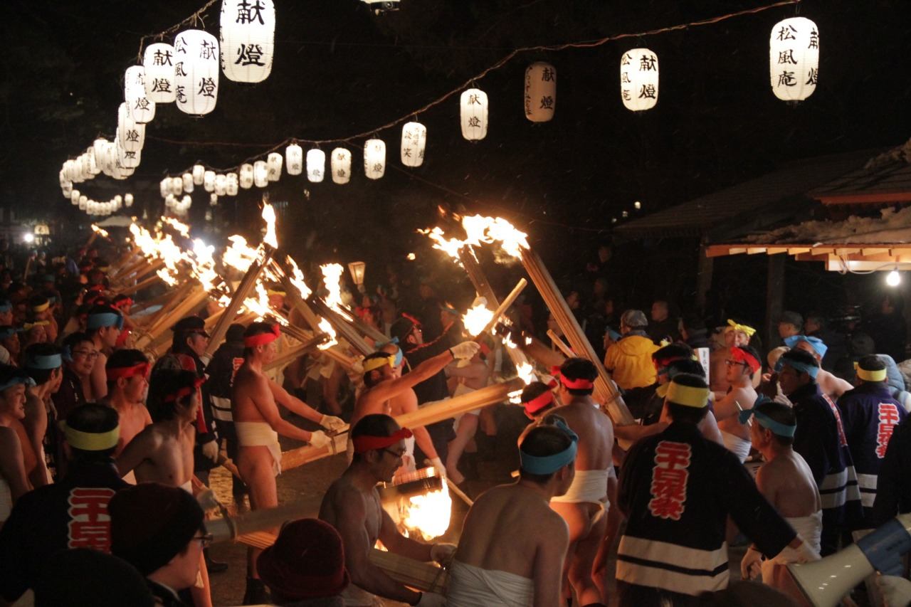

正月14日から20日まで新春の祈祷である常行堂の摩多羅神祭が執り行われます。特に結願の20日は二十日夜祭と称され、献膳式に引き続き古伝の常行三昧供の修法が行われます。
さらに厄年の老若男女がたいまつの明かりを先頭に常行堂まで練り歩き、宝前に大根や白菜などの供物をささげて、無病息災、家内安全を祈願する献膳上り行列が行われます。最後に堂内では法楽として延年の舞が夜半まで奉納されます。
正月14日から20日まで新春の祈祷である常行堂の摩多羅神祭が執り行われます。特に結願の20日は二十日夜祭と称され、献膳式に引き続き古伝の常行三昧供の修法が行われます。
さらに厄年の老若男女がたいまつの明かりを先頭に常行堂まで練り歩き、宝前に大根や白菜などの供物をささげて、無病息災、家内安全を祈願する献膳上り行列が行われます。最後に堂内では法楽として延年の舞が夜半まで奉納されます。
延年とは齢を延べる、つまり長生きをするという意味で、転じて諸大寺で法会のあとに僧侶らによって演じられる遊宴歌舞の総称として用いられるようになり、平安時代から室町時代にかけて盛んに行われた。
毛越寺の延年の舞は、平安時代の優雅な雰囲気と古い形式を伝えていることから、国の重要文化財に指定されている。
摩多羅神とは、天台宗寺院の常行堂（護法堂）に祀られていた神で、中世に盛んに信仰を集めた。
常行堂の阿弥陀の背後に祀られ、「後戸（うしろど）の神」とも言われる。
伝説では比叡山の円仁（第3代天台座主、慈覚大師）が中国より帰国の途次に感得し、叡山に常行堂を設け勧請したのがはじまりという。
〒○○○-○○○
岩手県○○市○○町〇丁目○○-○○
☏ 000-0000-0000
fax 000-0000-0000